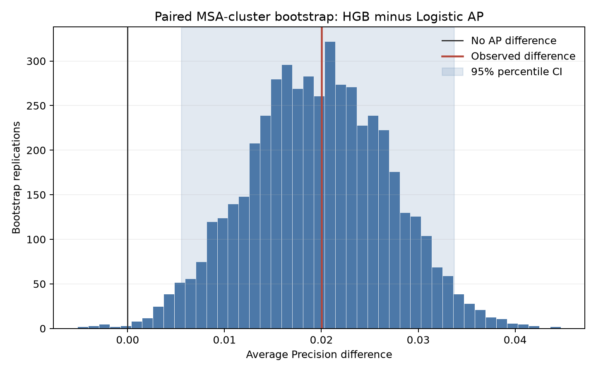
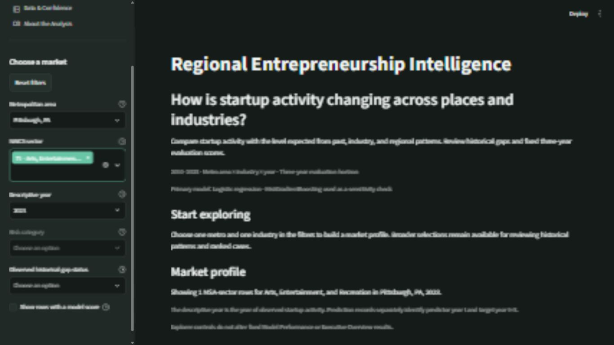

Business Analytics Research Project
Regional Entrepreneurship Intelligence
Predicting Where Startup Activity Falls Behind Regional Economic Opportunity
MSA × Industry × Year
2010–2023
Opportunity Entrepreneurship
Economic growth creates opportunity, but opportunity does not automatically translate into entrepreneurship. In the empirical model, economic opportunity means observable regional and industry conditions, not every possible dimension of opportunity. The project asks whether those historical conditions can identify where startup activity may fall below a model-based expectation three years later. The purpose is to focus limited analytical attention, not diagnose a market from a score.
Open with the opportunity-response tension. Opportunity = observable conditions in the empirical model. Name the three-year horizon. Prioritization, not diagnosis.
The problem
Economic opportunity and entrepreneurial response do not always move together.
Industry opportunity ↑ Economic activity + jobs ↑
Expected response
Entrepreneurship keeps pace Observed response
Response trails expectation
What happens when a regional industry is growing, but local entrepreneurial activity is not keeping pace with what we would expect?
The central problem is a mismatch. A regional industry can grow economically without seeing a proportional entrepreneurial response. In the analysis, that response is compared with what observable regional-industry conditions would lead the model to expect. This is a predictive association, not a causal claim. The practical challenge is deciding which of thousands of combinations deserve closer investigation.
Meaning: economic growth and startup response can diverge. Call it a mismatch, not a failure. Avoid causal language. Move from thousands of cases to priority review.
Research question
Can historical regional-industry conditions predict whether startup activity will fall below its expected level three years later?
Thousands of markets Limited analyst time Prioritized review
The goal is to help analysts decide which markets deserve closer investigation when time and staff are limited.
The practical question comes first: with limited time and staff, which markets deserve closer investigation? Technically, the study asks whether information available today can rank the risk of a model-relative entrepreneurial gap three years later. The system narrows the field while preserving human judgment. It does not allocate funding, issue an official designation, or explain the cause of a gap.
Meaning: focus scarce analyst time. Technical question: future model-relative gap risk. Three-year horizon. No automatic funding or official designation.
Conceptual framework
Entrepreneurial alignment compares response with context-specific expectation.
1 Economic
→
2 Expected
↘
compare Entrepreneurial
→
5 Potential
3 Observed response
↗
The expectation changes with historical regional and industry conditions; it is not one national target for every place.
The framework compares what happened with what the model expected under similar observable conditions. In the empirical model, opportunity is operationalized through employment, startup history, sector, and regional context; it does not measure every dimension of economic opportunity. Expected and observed startup activity form entrepreneurial alignment. A materially negative difference becomes a potential gap. The benchmark is conditional and model-based, not one national target for every place.
Meaning: compare observed response with a context-specific expectation. Opportunity = measured regional-industry conditions. Technical term: entrepreneurial alignment. Not one national target.
Data and unit of analysis
One row = MSA × 2-digit NAICS industry × year
BDS Startup activity
QCEW Employment and
ACS Demographic and
CBP Establishment
→
Analytical panel July 2023 CBSA geography
63,577 observations
381 metropolitan areas
19 sectors
2010–2023 study period
One observation represents one metropolitan area, one broad industry, and one year. The technical unit is MSA by two-digit NAICS sector by year. The panel contains 63,577 observations across 381 metros, 19 sectors, and 2010 through 2023. BDS supplies startup activity, QCEW employment conditions, ACS regional context, and CBP establishment context. Sources are harmonized to July 2023 CBSA geography and the 2022 NAICS analytical standard.
Meaning: one metro, broad industry, and year. Technical unit: MSA × 2-digit NAICS × year. Give the four scope numbers. Keep harmonization secondary.
Defining the outcome
A gap means startup activity falls meaningfully below what the model expected.
Entrepreneurial Alignment = Observed Startup Rate − Expected Startup Rate
Lowest 20% of training-period differencesp20 residual threshold
Potential gap Approximately meets / exceeds expectation
Model-relative: not an administrative designation, causal diagnosis, or judgment that an ecosystem is “failing.”
A gap means startup activity falls meaningfully below what the model expected under observable conditions. The technical construct is entrepreneurial alignment: observed minus expected startup rate. The lowest training-fifth becomes the gap definition, formally the p20 residual threshold. That threshold is learned from training data only. The label is model-relative, not a causal diagnosis, regulatory classification, funding rule, or judgment about ecosystem quality.
Meaning: meaningful shortfall from model expectation. Technical term: entrepreneurial alignment. Lowest training 20% = p20 residual threshold. Model-relative, not an official designation.
Leakage-safe temporal validation
We only use information that would have been available at the time of prediction.
2010–2017 development predictor years
2018–2020 final holdout predictor years
+3 years
2021–2023 reserved target years
Expected model learned inside training data Gap threshold learned from training residuals Scaling learned from training rows Future benchmark covariates excluded
Future information never flows backward into the predictor set.
The design asks what could have been known at the time. Conditions at t predict whether a shortfall appears at t plus three. The technical approach is leakage-safe temporal validation. Development predictors span 2010 through 2017; later years the model never trained on use predictors from 2018 through 2020 and targets from 2021 through 2023. The expected model, p20 threshold, and scaling are learned inside training data only. Future information never moves backward.
Meaning: use only information available then. Technical label: leakage-safe temporal validation. 2018–2020 predictors → 2021–2023 targets. No future information moves backward.
What exploratory analysis taught us
Growth matters modestly. Industry matters more. Markets differ more from each other than they change year to year.
01 Growth: related, but weakly +0.175 pp startup-rate difference for a 5-point employment-growth difference
Coefficient 3.502 per 1.0 decimal growth 02 Sector: substantial structure Industry identity accounts for much more explanatory structure than growth alone
03 Markets differ more than they change 0.690 pooled0.077 within-panel
between-market differences are much more persistent than annual changes within a market
Three plain-language findings shaped the model. Growth matters modestly: a five-point employment-growth difference corresponds to about 0.175 startup-rate points; the technical coefficient is 3.502 per 1.0 decimal growth. Industry matters more than growth alone. And markets differ from one another more consistently than they change year to year: pooled lag correlation is 0.690 versus 0.077 within the same MSA-industry. The simulated null was about negative 0.085, so 0.077 is small, not zero.
Meaning: growth association is modest. 5 points → +0.175 startup-rate points. Industry explains more structure. 0.690 pooled vs 0.077 within-panel. Do not call 0.077 zero.
Modeling strategy
First estimate expectation. Then predict future gap risk.
Stage 1 Expected startup activity OLS benchmark
→
Leakage-safe training residual p20
→
Stage 2 Future gap risk Logistic Regression HGB sensitivity check
Why Logistic remains primary: preselected, interpretable, and competitive across temporal development.
First, estimate what startup activity would normally look like under similar observable conditions. Technically, OLS produces the expected-rate benchmark and the training-only gap label. Second, predict whether a meaningful shortfall appears three years later. Logistic Regression is primary; HistGradientBoosting tests whether nonlinear structure improves ranking. Logistic was preselected, interpretable, and competitive across development.
Meaning: estimate normal response under similar conditions. Technical stage 1: OLS benchmark and gap label. Meaning: predict a future meaningful shortfall. Logistic primary; HGB sensitivity.
Later years never used for training · Logistic Regression
The model creates a useful risk ranking, not perfect classification.
Ranking quality 0.404 Average Precision (AP)
Risk separation 0.692 ROC-AUC
High-risk concentration 1.99× top-decile lift
Ranks the less-common gap outcome.
Separates higher- from lower-risk cases.
Concentrates gaps in the priority group.
Probability error: Brier score 0.164 .
First question: does the model rank future risk usefully? On later years it never trained on, it ranks the less-common gap outcome substantially better than the natural baseline. Average Precision is 0.404 versus 0.233 prevalence; AP is not accuracy. Its ability to separate higher- from lower-risk cases, ROC-AUC, is 0.692. Gaps are concentrated at 1.99 times the overall rate in the top decile. Probability error, measured by the Brier score, is 0.164. This is useful ranking, not perfect classification.
Meaning: ranking quality first. AP 0.404 vs 0.233; AP is not accuracy. AUC 0.692 = risk separation. Lift 1.99× = concentration. Useful screening, not perfect classification.
Selection discipline · HistGradientBoosting vs. Logistic Regression
The more complex model scored slightly better—but not consistently enough to replace the simpler model.

Logistic 0.404 95% CI 0.380–0.429
HGB 0.424 95% CI 0.398–0.450
HGB − Logistic +0.020 95% CI +0.006 to +0.034
48.7% of draws exceed practical +0.02 HGB wins 2 of 3 development folds Pooled development advantage ≈ +0.004 Logistic remains primary
Second question: should I have chosen the more complex model? HGB scored slightly better in the holdout: AP 0.424 versus 0.404 for Logistic. We repeatedly resampled metropolitan areas while keeping each metro’s observations together; technically, this is an MSA-cluster bootstrap. The AP difference is plus 0.020, with a 95 percent interval from plus 0.006 to plus 0.034. But only 48.7 percent of draws cleared the practical threshold, HGB won two of three development folds, and its pooled development advantage was about 0.004. The full switch rule was not met, so Logistic remains primary.
Meaning: should complexity replace simplicity? HGB 0.424 vs Logistic 0.404. MSA-cluster bootstrap keeps each metro together. Difference +0.020; CI +0.006 to +0.034. Switch rule not met; Logistic remains primary.
Sector-only benchmark · What industry identity alone can predict
Knowing the industry gets us part of the way. The full model still distinguishes higher-risk places within the same industry.
Natural prevalence 0.233
Sector-only 0.325
Logistic 0.404
HGB 0.424
+0.079 AP Logistic over sector-only 17 / 17 evaluable sectors beat their
Third question: is the model doing anything more than identifying risky industries? If all we knew was industry identity, the sector-only benchmark reaches AP 0.325 versus 0.233 prevalence. The full Logistic model reaches 0.404. Its incremental AP is plus 0.079, with a 95 percent interval from plus 0.061 to plus 0.098, and it beats sector prevalence in all 17 evaluable sectors. Industry gets us part of the way; regional and historical conditions still distinguish places within the same industry. The AP difference is not a percent explained.
Meaning: what can industry identity alone predict? Sector-only AP 0.325. Full Logistic AP 0.404; increment +0.079. 17 of 17 evaluable sectors. Not “percent explained.”
A practical screening rule
Review the highest-risk 10% as a focused early-warning queue.
For every 100 priority cases reviewed ≈46 realized gaps · ≈54 non-gaps
1,031 cases reviewed
476 realized gaps
46.2% of reviews became gaps precision
19.9% of all gaps captured recall
1.99× overall gap rate lift
1.17 additional reviews per gap false-positive / true-positive ratio
Focused, not comprehensive: the queue captures about 20% of all realized gaps.
The practical option is a focused queue: review the highest-risk ten percent. That is 1,031 cases, of which 476 became realized gaps. For every 100 priority reviews, about 46 became gaps and 54 did not. That 46.2 percent share is precision. The queue captured 19.9 percent of all realized gaps, which is recall, and concentrated gaps at 1.99 times the overall rate, which is lift. Each realized gap required 1.17 additional reviews that did not become gaps. Those reviews are not automatically worthless; they are the workload cost of screening.
Meaning: a manageable priority-review queue. 46 of 100 reviews became gaps = precision. 19.9% of all gaps captured = recall. 1.99× overall rate = lift. Focused, not comprehensive or mandatory policy.
Coverage matters as much as performance
The model can issue a reliable score for 85.2% of candidate cases.
10,304 reliable score · 85.2%
14.8% insufficient data
12,091 candidate MSA-industry-year cells · 1,787 insufficient-data cases
Exclusion rate by MSA size Small 17.3%
Middle 10.7%
Large 6.6%
The model does not force a score when required information is missing. This is model abstention, not a negative prediction. AP 0.404 applies to scoreable cases.
Before performance, ask who can receive a reliable score. Of 12,091 candidate cases, 10,304 have sufficient information, so coverage is 85.2 percent. The remaining 14.8 percent do not receive a forced score; technically, these are insufficient-data model abstentions, not negative predictions. Exclusion is 17.3 percent for small metros, 10.7 percent for the middle group, and 6.6 percent for large metros. AP 0.404 applies only to the population the model can score.
Meaning: 85.2% can receive a reliable score. 14.8% lack required data. Technical term: model abstention. Small metros are excluded more often. Performance applies only to scoreable cases.
Holdout shift and limitations
More cases fell below expectation in the holdout period—even though startup activity itself increased.
Development 19.1% gap prevalence
→ Holdout 23.3% gap prevalence
Sector and MSA-size composition explain little of the increase.
More observations fell below the model’s expected level.
Technical interpretation: a benchmark-relative temporal shift—not a simple decline in entrepreneurship.
Model-relative outcome Prediction, not causation Complete-case abstention 2-digit NAICS Three-year horizon Pandemic-era holdout Calibration varies at extremes Weaker small-market coverage
More observations fell below the model’s expected level in later years: gap prevalence rose from 19.1 percent in development to 23.3 percent in the holdout. Raw startup activity also increased, and sector or metro-size composition explains little of the change. Technically, this is a benchmark-relative temporal shift, not a simple decline in entrepreneurship. Limits remain: the outcome is model-relative, prediction is not causation, complete-case rules create abstention, sectors are broad, the horizon is three years, and the holdout spans pandemic-era conditions.
Meaning: more cases fell below expectation. 19.1% development → 23.3% holdout. Raw startup activity increased. Technical term: benchmark-relative shift. Do not imply entrepreneurship declined.
Live demonstration
From Research Model to Decision Support
One market. One industry. One question.

Static fallback · actual current application Pittsburgh, PA Arts, Entertainment, and Recreation 14 observed years 4 comparable gap years 3 holdout prediction records Investigate further.
Open local dashboard ↗ Local route validated · deployed URL unavailable For the demonstration, I select Pittsburgh and Arts, Entertainment, and Recreation. I begin with the 14-year observed history and four years with comparable expected-rate context. For this historical evaluation period, the model assigned the market-industry combination an elevated gap-risk score. That is a retrospective ranking signal, not a 44 percent chance of failure and not a current forecast. I then check data confidence. The appropriate takeaway is to investigate further; the score does not explain why the pattern occurred or what intervention to fund.
Select Pittsburgh and sector 71. Show history before the score. Describe an elevated historical gap-risk score. Not a probability of failure or current forecast. Investigate; do not diagnose.
What the evidence supports
Opportunity does not automatically become entrepreneurship.
Supported Future model-relative gaps contain predictable structure Sector carries substantial information Regional history adds within-sector signal Risk rankings can support targeted review High-risk cases concentrate realized gaps Reasonable later-period generalization among eligible rows Not supported Growth causes entrepreneurship A high score explains why a gap occurs Every MSA-industry can be scored A high score automatically warrants funding The model is a current national forecast Prediction replaces local judgment The model identifies where to look—not what intervention to make.
Prediction → Prioritization → Human Investigation
The evidence supports a disciplined but bounded conclusion. Future model-relative gaps contain predictable structure. Sector matters substantially, and regional history adds signal within industries. Risk rankings can create a focused review queue among eligible observations. The evidence does not establish causation, explain why a gap occurs, score every market, or justify automatic funding. Opportunity does not automatically become entrepreneurship. The model identifies where to look—not what intervention to make.
Separate supported from unsupported claims. Return to the opening tension. End on the decision boundary.
Backup B1
Detailed final holdout model comparison Model AP ROC-AUC Brier Role Logistic Regression 0.404 0.692 0.164 Primary HistGradientBoosting 0.424 0.708 See artifact Sensitivity Sector-only 0.325 — — Benchmark Natural prevalence 0.233 — — Baseline
Backup B2
Bootstrap uncertainty preserves geographic clustering. Resample MSAs → Keep each MSA’s rows together → Recompute paired AP → Summarize percentile intervals
Inference target: HGB AP − Logistic AP on the same holdout resamples.
The paired cluster design respects dependence among sectors and years within a metropolitan area.
Backup B3
Why pooled persistence overstates within-market stability 0.690 pooled lag-1
0.077 within-panel lag-1
≈ −0.085 simulated null
Stable differences between markets are not the same as persistent annual deviations within a market.
Backup B4
The review threshold trades reach for workload. Rule Workload Precision Recall Lift Top 10% 1,031 46.2% 19.9% 1.99× See reports/tables/a6_decision_rule_comparison.csv for all evaluated rules.
Threshold choice is a capacity decision, not a universal optimum.
Backup B5
Sector prevalence differs, so within-sector ranking is the harder test. Logistic exceeded the sector-specific prevalence benchmark in all 17 evaluable sectors.
Backup B6
Complete-case requirements produce structured abstention. More likely scoreable Larger MSAs Complete population controls Richer historical coverage More likely excluded Smaller MSAs Lower observed startup activity Missing population or control data No score is not evidence of low risk.
Backup B7
The presentation traces to frozen Assignment 6/7 artifacts. Federal source files → Versioned panel → Frozen predictions → Dashboard layer → Presentation
63,577 analytical rows
0 duplicate analytical keys
0 reviewer-fixture foreign-key violations